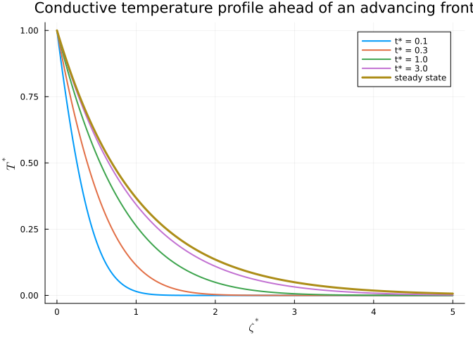
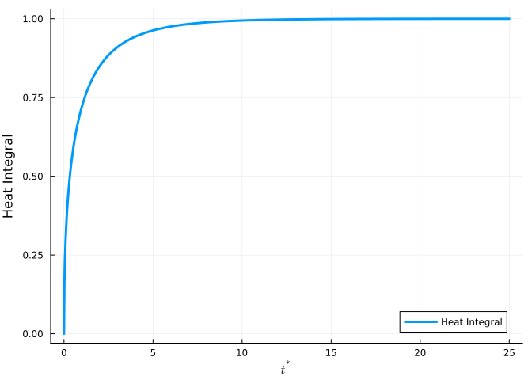
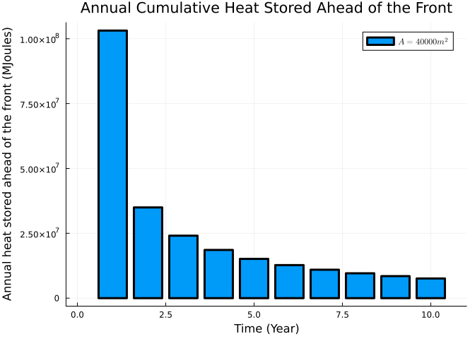

using DataFrames
using Plots
using StatsPlots
using LaTeXStrings
using SpecialFunctions
using ShiftedArraysThermal Recovery - Part III
Heat Conduction Ahead of an Advancing Front
julia
thermal recovery
heat conduction
heat loss
Disclaimer
This blog post is for educational purposes only. Any commercial use of the information provided in this blog post is prohibited. The author is not responsible for any damage or loss caused by the use of the information provided in this blog post.
Introduction
In the previous post, we discussed heat conduction into the overburden from a stationary hot surface area. It was extended to a case with the hot source area exapnding over time parallel to the overburden surface. In this post, we will extend the model to include heat conduction ahead of an advancing front moving into the overburden. The model is based on the work of [1]. The problem is a 1D heat conduction model with a moving front. Details of the model can be found in [1]. The model is implemented in Julia and the source code can be downloaded by clicking on </>Code next to the blog title.
Heat conduction ahead of an advancing front
In a steam-assisted gravity drainage (SAGD) process, as the mixture of heated oil and condensate moves downward due to the gravity, the steam chamber expandes to fill in the voidage. A fraction of the stored heat in the chamber will be transfered ahead of the moving chamber into the cold region by conduction. The heat transfer ahead of the advancing front is modeled as a 1D heat conduction problem with a moving front.
The analytical solution for this problem is given by [1]:
\[ \frac {\partial^{2} T^{*}}{\partial \zeta^{2}} + \frac {\partial T^{*}}{\partial \zeta} = \frac {\partial T^{*}}{\partial t^{*}} \tag{1}\]
where \[ T^{*} = \frac {T - T_{R}} {T_{s} - T_{R}} \]
\[ t^{*} = \frac {U^{2}t} {\alpha} \]
\[ \zeta^{*} = \frac {U \zeta} {U} \]
U is the front velocity and \(\zeta\) is the distance from the front and is defined as:
\[ \zeta = x - Ut \]
The boundary conditions are:
\[ T^{*} = 0 \quad \text{when} \quad t = 0 \quad \text{for all} \quad \zeta^{*} \]
\[ T^{*} = 1 \quad \text{when} \quad \zeta^{*} = 0 \quad \text{and} \quad \mathrm t \gt 0 \]
Solution of this problem is given by Carslaw and Jaeger [2]:
\[ T^{*} = \frac {1}{2} \left[\text{erfc} \left( \frac {\zeta^{*} + t^{*}}{\sqrt{4 \mathrm t^{*}}} \right) + e^{-\zeta^{*}} \text{erfc} \left( \frac {\zeta^{*} - t^{*}}{\sqrt{4 \mathrm t^{*}}} \right) \right] \]
where \(\text{erfc()}\) is the complementary error function.
For the steady-state case, (Equation 1) will be simplified to:
\[ \frac {\partial^{2} T^{*}}{\partial \zeta^{2}} + \frac {\partial T^{*}}{\partial \zeta} = 0 \tag{2}\]
The solution of this problem is given by Carslaw and Jaeger [2]:
\[ T^{*} = e^{-\zeta^{*}} \]
We now implement both solutions in Julia:
function Tstar_transient(zeta_star, t_star)
return 0.5 * (erfc((zeta_star + t_star) / sqrt(4 * t_star)) + exp(-zeta_star) * erfc((zeta_star - t_star) / sqrt(4 * t_star)))
end;function Tstar_steady_state(zeta_star)
return exp(-zeta_star)
end;The solution is plotted below for different values of \(t^{*}\).
zeta_star = range(0, 5, length = 200)
t_star = [0.1, 0.3, 1.0, 3.0];# plot Tstar vs zeta_star for different values of t_star
plot(zeta_star, Tstar_transient.(zeta_star, t_star[1]), label = "t* = $(t_star[1])",
legend = :topright,
lw = 2,
title = "Conductive temperature profile ahead of an advancing front")
for i in 2:length(t_star)
plot!(zeta_star, Tstar_transient.(zeta_star, t_star[i]),
lw = 2,
label = "t* = $(t_star[i])")
end
plot!(zeta_star, Tstar_steady_state.(zeta_star),
lw = 3,
label = "steady state")
xlabel!(L"\zeta^{*}")
ylabel!(L"T^{*}")
Total heat stored ahead of the front at steady state
The cumulative heat stored ahead of the advancing front at steady state is given by:
\[ \frac{Q_{c}}{A} = \kappa \frac {(T_{steam} - T_{reservoir})}{U} \]
The following function is calculates the total heat stored ahead of the front at steady state:
function cumulative_heat_flux_stored_steady(U, kappa, T_steam, T_reservoir)
return kappa * (T_steam - T_reservoir) / U
end;Total heat stored ahead of the front at transient state
The total heat stored ahead of the front at transient state is given by:
\[ \frac{Q_{c}}{A} = \kappa \frac {(T_{steam} - T_{reservoir})}{U} \int_{0}^{\infty} T^{*} \mathrm d \zeta^{*} \]
where \(T^{*}\) is the temperature profile for the transient case. By substituting the solution for \(T^{*}\), the heat integral can be computed as follows:
\[ HI = \int_{0}^{\infty} T^{*} \mathrm d \zeta^{*} = \sqrt \frac{t^{*}}{\pi} e^{-t^{*}/4} + (1 + \frac{t^{*}}{2}) erf(\sqrt \frac {t^{*}}{4}) - \frac{t^{*}}{2} \]
Figure below shows the behavior of heat integral with respect to \(t^{*}\). At infinity the value of heat integral is equal to the steady state value (\(HI_{\infty} = 1.0\)).
t_star = range(0, 25, length = 1000);plot(t_star, sqrt.(t_star / pi) .* exp.(-t_star / 4) .+ (1 .+ t_star / 2) .* erf.(sqrt.(t_star / 4)) .- t_star / 2,
lw = 3,
label = "Heat Integral")
xlabel!(L"t^{*}")
ylabel!("Heat Integral")
The total heat stored ahead of the front at transient state is calculated as follows:
# make it broadcastable over t_star
function cumulative_heat_flux_stored_transient(U, kappa, T_steam, T_reservoir, t_star)
return kappa * (T_steam - T_reservoir) / U * (sqrt.(t_star / pi) .* exp.(-t_star / 4) .+ (1 .+ t_star / 2) .* erf.(sqrt.(t_star / 4)) .- t_star / 2)
end;Example
Following the example in previous post and by assuming that the steam chamber spread rapidly over the reservoir (constant surface area), we calculate the total heat stored ahead of the front at transient state for the following parameters:
- \(U = 1.5 \mathrm m/365 \quad days\)
- \(\alpha = 8.333e-7 * 86400 \quad \mathrm m^{2}/day\)
- \(\kappa = 1.7 * 86400 \quad \mathrm J/day/m/K\)
- \(T_{steam} = 264 \quad ^{\circ}C\)
- \(T_{reservoir} = 15 \quad ^{\circ}C\)
- \(A = 40000 \quad \mathrm m^{2}\)
It is assumed that the steam chamber moves downward at a speed of 1.5 m/year.
The annual total heat stored ahead of the front at transient state in 10 years is calculated as follows:
t = range(0, 10 * 365) * 1.0 # days
U = 1.5 / 365
α = 8.333e-7 * 86400
t_star = U * U .* t / α
kappa = 1.7 * 86400
T_steam = 264
T_reservoir = 15
A = 40000
# calculate the cumulative heat stored ahead of the front in overburden in MJoules
Q = A * cumulative_heat_flux_stored_transient(U, kappa, T_steam, T_reservoir, t_star) / 1e6 # MJ
# create a DataFrame to store the results
df = DataFrame(t = t, year = t / 365.0, Q = Q);The annual cumulative heat stored ahead of the front at transient state in 10 years is calculated as follows:
df_sub = df[df.year .== round.(df.year, digits = 0), :]
# create a lag column from Q column
df_sub[!, :Q_lag] = ShiftedArrays.lag(df_sub.Q, 1)
# calculate the increamental heat loss to overburden
df_sub[!, :Q_incremental] = df_sub.Q - df_sub.Q_lag
@df df_sub bar(:year, :Q_incremental, xlabel = "Time (Year)", ylabel = "Annual heat stored ahead of the front (MJoules)",
title = "Annual Cumulative Heat Stored Ahead of the Front", lw = 3, label = L"A = 40000 m^{2}")
Conclusion
In this post, we showed that the maximum accumulated heat ahead of a moving front is equal to the steady state value. In many practical cases, the energy accumulation ahead of the steam front is close to the steady state value.